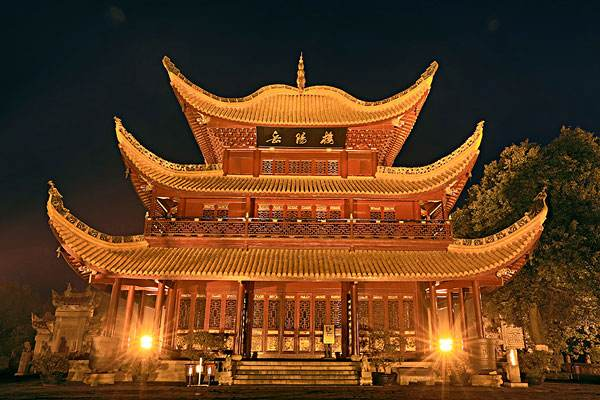

我的家乡——
岳阳
首页
家乡美景
家乡美味
春节习俗
注册登录
Home
scenery
food
custom
consult
美景列表
岳阳楼
洞庭湖
圣安寺
任弼时同志故居
君山岛
南湖
金鹗山
张谷英村
巴陵广场
屈子祠
大云山
汴河街
岳阳·
美景
你现在的位置：
首页
>
家乡美景
>
YUEYANG scenery
岳阳市旅游资源丰富，全市拥有一处纳入联合国“国际湿地公约”的重要湿地，2个5A级风景旅游度假区，一个国家级自然保护区，一个世界非物资文化遗产，2处国家重点风景名胜区，3个国家级森林公园，6个国家重点文物保护单位，尤其是“
洞庭天下水，岳阳天下楼
”旅游品牌闻名中外。
美景列表
Share the beauty with you
岳阳楼

洞庭湖
圣安寺
任弼时同志故居
君山岛
南湖
金鹗山
张谷英村
巴陵广场
屈子祠
大云山
紫气东来，洞庭波涌三湘四水。
春风送晚，岳阳楼聚东西南北。
夏顶骄阳，扬帆泛舟十万八千。
秋高气爽，荷花清香鱼肥猪壮。
冬雪银装，君山显露大小两娇。
历史倒显，英雄豪杰激战三国。
美景简介
岳阳楼：
位于岳阳市西门城头、紧靠洞庭湖畔，自古有“洞庭天下水，岳阳天下楼”之誉
洞庭湖：
古称云梦、九江和重湖，处于长江中游荆江南岸，跨岳阳、汨罗、湘阴、望城、益阳、沅江、汉寿、常德、津市、安乡和南县等县市。
圣安寺：
地处岳阳市城南郊，距市区约3公里，是岳阳一座有着悠久历史的寺院。
君山岛：
君山岛，古称洞庭山、湘山、有缘山，位于岳阳市境内，是八百里洞庭湖中的一个小岛。
南湖：
南湖是由洞庭湖派生出来的自然湖泊，属国家级岳阳楼洞庭湖风景名胜区的主景区之一，总面积12平方千米。它倚山而卧，和城而生，峰峦起伏，岸线深幽，景致秀美。
金鹗山：
金鹗山位于岳阳市城区中心，西望洞庭湖．东滨南湖。山形如巨鸟伫立。清光绪《湖南通志》记载："金鹗山在县南二里，相传有异鸟飞集于山，其色如金。"故名金鹗山。
张谷英村：
张谷英古村，位于湖南岳阳以东的渭洞笔架山下，地处岳阳、平江、汨罗三县市交汇处，距离长沙、岳阳分别约150公里和70公里，为中国保存最为完整的江南民居古建筑群落。
屈子祠：
屈子祠，亦称屈原庙，现辟为屈原纪念馆，位于湖南省汨罗城西北玉笥山顶。始建于汉代，现存建筑是清乾隆帝颁旨1754年重建的。
巴陵广场：
巴陵广场总投资2.1亿元，位于岳阳市中心城区主干道巴陵路的西端，西临洞庭湖，北侧是沿湖二期工程岳阳楼核心景区，南侧为鱼巷子商贸区
任弼时同志故居：
任弼时同志故居位于湖南省东北部的汨罗市弼时镇，是任弼时同志的出生地。故居为独木结构，三间三进两偏层，门前有邓小平同志1980年手书“弼时同志故居”匾额。
大云山：
湖南省岳阳县大云山位于湘北岳阳临湘两县（市）的交界处，大云山属幕阜山西北支,自古为江南名胜,道家洞天,志称盘旋七十二峰,海拔911.1米
汴河街：
汴河街位于岳阳楼主楼之前，是以岳阳楼文化、洞庭文化、巴陵文化为基础精心打造的一条特色仿古商业街